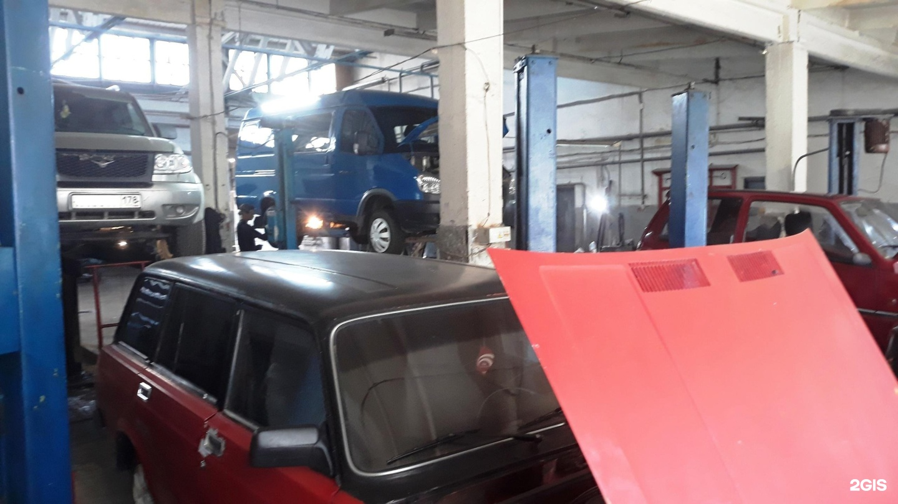
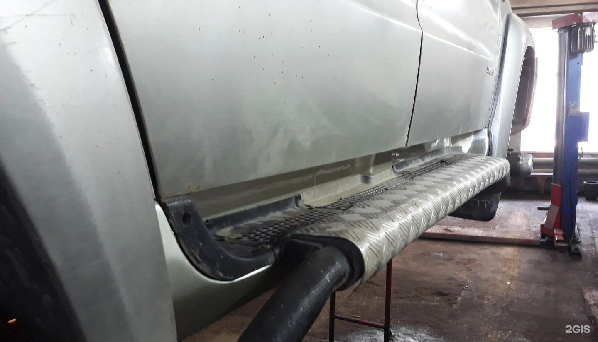
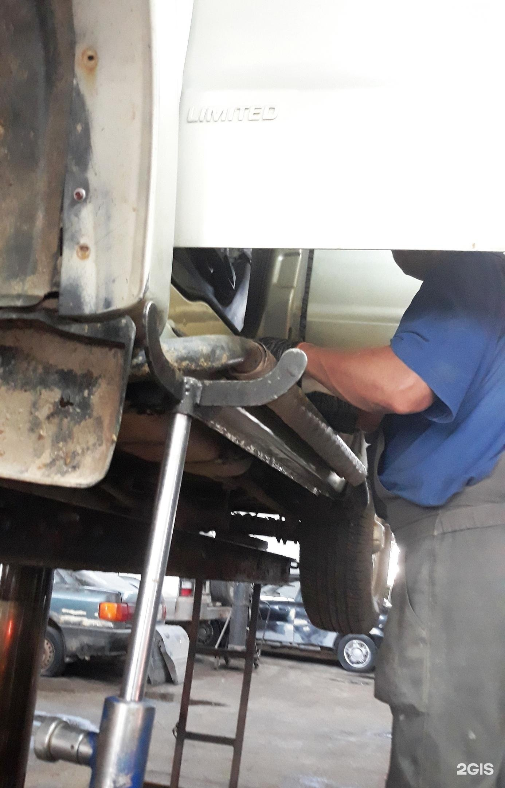
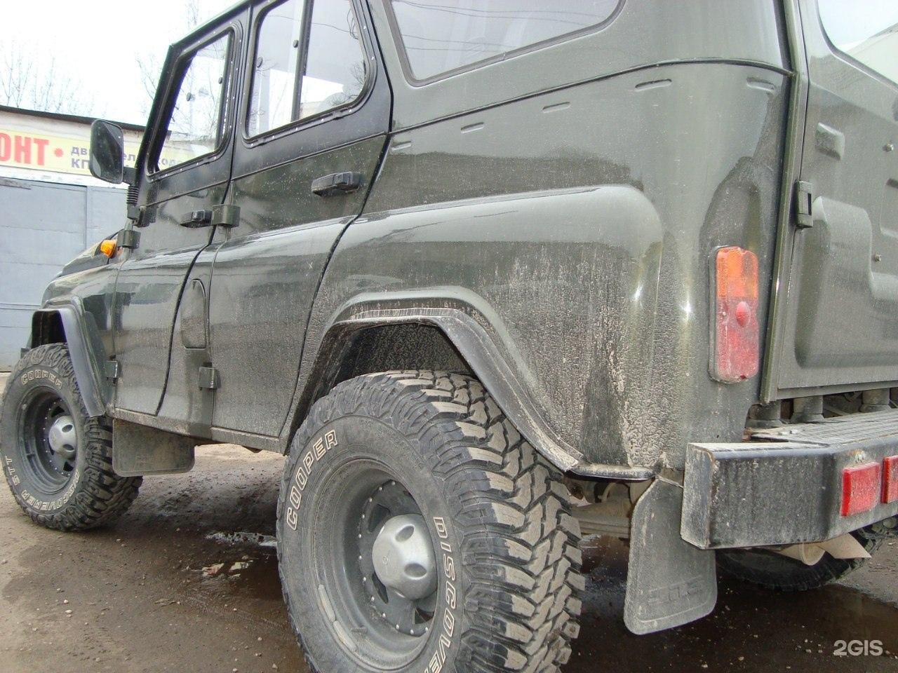

торгово-сервисная компанияЦентр
Машсервис
Ремонт кузова, ходовой и электроники
Покраска, устранение вмятин, работы с подвеской, двигателем и электроникой. Свяжитесь с СТО, чтобы обсудить ремонт.

Часы работы
Пн–Пт 09:00–13:00, 14:00–18:00
Демо-концепт · текущий прайс ещё не подтверждён
Работы
Что ремонтируем
- 01
Кузовной ремонт
Покраска, полировка, устранение вмятин и сварка.
- 02
Покраска
- 03
Полировка
- 04
Ремонт вмятин
- 05
Сварка
- 06
Ремонт ходовой части автомобиля
- 07
Ремонт электронных систем авто
- 08
Ремонт бензиновых двигателей
- 09
Антикоррозийная обработка авто



Свяжитесь с СТО и обсудите ремонт
ПозвонитьЦены
Услуги и цены
Отзывы
За что ценят
Один посетитель положительно оценивает скорость ремонта.
Клиент хвалит сохранённую информацию о выполненном ремонте и быстрый ответ на последующий вопрос.
Постоянная клиентка положительно отзывается о работе мастеров.
Пересказ мнений посетителей без имён авторов. Все отзывы в 2ГИС
Справочная
Отделы и связь
Единый номер · пн–пт 9:00–18:00
СТО
Электронная почта
amsrvspskov@mail.ruВКонтакте
Страница во ВКонтакте
Номера, почта и ссылка — из карточки 2ГИС.
Контакты
Как нас найти
Центр
- Часы работы
- Пн–Пт 09:00–13:00, 14:00–18:00